วงจรสำหรับการทดลองเพื่อหาค่าของตัวเหนี่ยวนำ#
บทความนี้นำเสนอวิธีการหนึ่งสำหรับการทดลองต่อวงจรไฟฟ้า-อิเล็กทรอนิกส์ เพื่อวัดค่าเหนี่ยวนำ (Inductance Measurement) และสามารถนำไปประยุกต์ใช้งานร่วมกับไมโครคอนโทรลเลอร์ได้
Keywords: Inductor, Inductance Measurement, RLC Circuit Analysis, EasyEDA Simulation, Oscilloscope
▷ วงจรสำหรับการจำลองการทำงานด้วยซอฟต์แวร์ EasyEDA#
การวิเคราะห์การทำงานของวงจรแบ่งเป็นสองช่วง และให้ตัดส่วนที่เกี่ยวข้องกับการทำงานของไอซี LM393 ออกไปก่อน (ซึ่งใช้สำหรับการเปรียบเทียบแรงดันไฟฟ้าแล้วแปลงให้เป็นสัญญาณดิจิทัล)
จากรูปผังวงจรจะเห็นได้ว่า มีการใช้แหล่งจ่ายกระแสตรง VS ซึ่งเป็น DC Voltage Source และได้ตั้งค่าการใช้งานให้แหล่งจ่ายนี้สร้างสัญญาณแบบพัลส์ (Pulse) ที่มีระดับแรงดันไฟฟ้าเท่ากับ 5V เป็นระยะเวลา 5msec แล้วจึงลดลงมาที่ระดับ 0V
ผังวงจรสำหรับการวิเคราะห์การทำงานด้วยซอฟต์แวร์ มีดังนี้
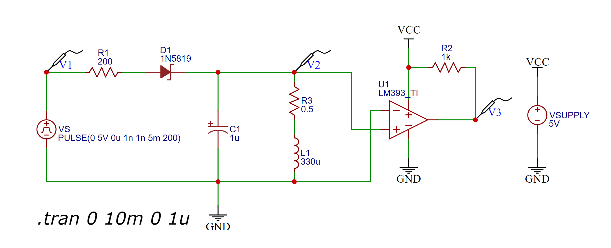
รูป: ผังวงจรสำหรับการจำลองการทำงานด้วยซอฟต์แวร์ EasyEDA
ในการวิเคราะห์การทำงานของวงจร ให้แบ่งเป็น 2 ช่วง
1) ช่วงที่หนึ่ง: VS เปลี่ยนจาก 0V → 5V
- เริ่มต้นตัวเก็บประจุมีแรงดันไฟฟ้าเป็น 0V และตัวเหนี่ยวนำมีกระแสไหลผ่านเป็น 0A ดังนั้นวงจรจึงมีเงื่อนไขเริ่มต้นเป็นศูนย์ (Zero Initial Condition)
- เนื่องจากมีแรงดันไฟฟ้ามากพอที่จะทำให้มีกระแสไหลผ่านตัวต้านทาน R1 และไดโอด D1 ทำให้เกิดการบัสอัสตรง (Forward Bias)
- ค่า VF (Forward Voltage) ของ 1N5819 เริ่มต้นอยู่ที่ประมาณ 0.34V (max.) @0.1A โดยประมาณ (อ้างอิงจากไฟล์ 1N5819 Datasheet)
- เมื่อมีกระแสไหลผ่านไดโอด D1 กระแสส่วนหนึ่งจะทำให้เกิดการชาร์จประจุที่ตัวเก็บประจุ C1 และขณะเดียวกันกระแสอีกส่วนหนึ่ง จะไหลผ่านตัวต้านทาน R3 และตัวเหนี่ยวนำ L1 ไปยัง GND ของวงจร (ในตัวอย่างนี้ R3 ใช้แทนค่าความต้านทานแฝงของตัวเหนี่ยวนำไฟฟ้า L1)
- เมื่อเวลาผ่านไป แต่ VS ยังคงที่เท่ากับ 5V แรงดันไฟฟ้าตกคร่อม V(C1) ที่ตัวเก็บประจุ เพิ่มขึ้นจนถึงระดับคงที่ (แต่ไม่ถึงระดับ 5V) เข้าสู่สภาวะคงตัว (Steady State) และไม่มีการชาร์จประจุอีกต่อไป แต่ยังมีกระแสไหลผ่าน R3 และ L1 และสามารถคำนวณได้ดังนี้ (สมมุติว่า VF=0.34V)
- ถ้าเลือกใช้ความต้านทานสำหรับ R1 ที่มีค่าน้อยลง จะทำให้กระแส I(L1) ที่ไหลผ่านตัวเหนี่ยวนำ มีปริมาณสูงขึ้น
- แรงดันตกคร่อม V(C1) ที่ตัวเก็บประจุ จะเท่ากับแรงดันตกคร่อมที่ตัวต้านทาน R3 (ตัวเหนี่ยวนำ L1 มีความต้านทานเท่ากับศูนย์ในอุดมคติ)
2) ช่วงที่สอง: VS ลดลงจาก 5V → 0V
- แรงดันตกคร่อมที่ไดโอดจะเป็นลบเมื่อเปรียบเทียบกับแรงดันตกคร่อมที่ตัวเก็บประจุในขณะนั้น ทำให้เกิดการไบอัสกลับ (Reverse Bias) ดังนั้นจะถือว่าไม่มีกระแสไหลย้อนกลับ (หรือมีในปริมาณต่ำมาก ๆ)
- อุปกรณ์ทั้งสามตัวนี้ ทำงานอยู่ในวงจรแบบอนุกรม แต่ไม่มีแหล่งจ่าย VS เข้ามาเกี่ยวข้อง หรือ เรียกวงจรในลักษณะนี้ว่า Source-free RLC Circuit
- แม้ว่าไม่มีแหล่งจ่ายใด ๆ ในวงจร แต่ตัวเก็บประจุมีแรงดันไฟฟ้ามากกว่า 0mV และมีกระแสไหลผ่านตัวเหนี่ยวนำมากกว่า 0mA หรือกล่าวได้ว่า มีพลังงานอยู่ในวงจรไฟฟ้าในขณะนั้น
▷ การวิเคราะห์วงจร RLC#
การวิเคราะห์กระแสไฟฟ้าที่ไหลในวงจร RLC (Source-free) ในช่วงที่สอง ตามรูปวงจรต่อไปนี้ จะนำไปสู่สมการเชิงอนุพันธ์อันดับสอง
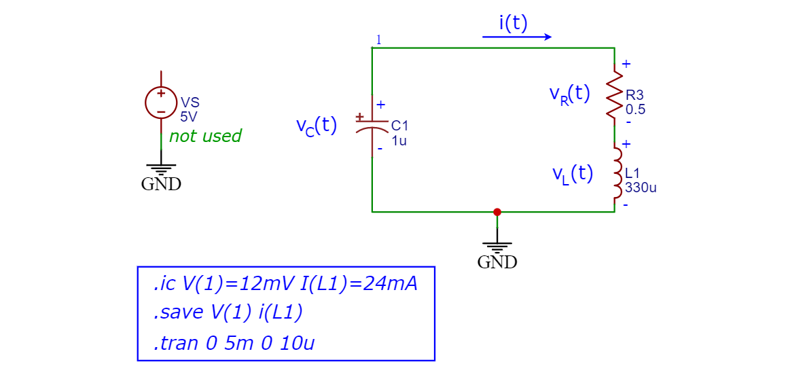
รูป: วงจร RLC แบบอนุกรมที่ใช้ในการวิเคราะห์และจำลองการทำงานของวงจร
และเขียนสมการใหม่ได้เป็น และนำไปหาอนุพันธ์ของสมการนี้ จะได้สมการเชิงอนุพันธ์อันดับสอง และมีเงื่อนไขเริ่มต้นสำหรับสมการเชิงอนุพันธ์อันดับสอง ค่าคงที่ และ เป็นค่าสำหรับเงื่อนไขเริ่มต้นซึ่งไม่เท่ากับศูนย์ (Non-Zero Initial Conditions) และคำนวณได้จากช่วงที่หนึ่งในสภาวะคงที่
จากสมการเชิงอนุพันธ์อันดับสอง สามารถเขียนเป็นระบบสมการอนุพันธ์อันดับหนึ่งได้ดังนี้
เมื่อได้สมการเชิงอนุพันธ์ของวงจรแล้ว ก็สามารถหาผลเฉลยได้ เช่น โดยใช้วิธีเขียนโค้ดสำหรับ MATLAB และประมวลผลทางคณิตศาสตร์เชิงสัญลักษณ์ (Symbolic Math Processing) ตามตัวอย่างดังนี้
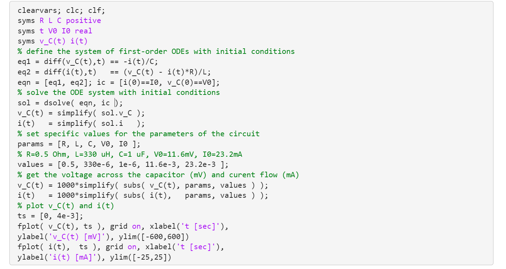
รูป: ตัวอย่างโค้ด MATLAB เพื่อหาผลเฉลยของระบบสมการเชิงอนุพันธ์
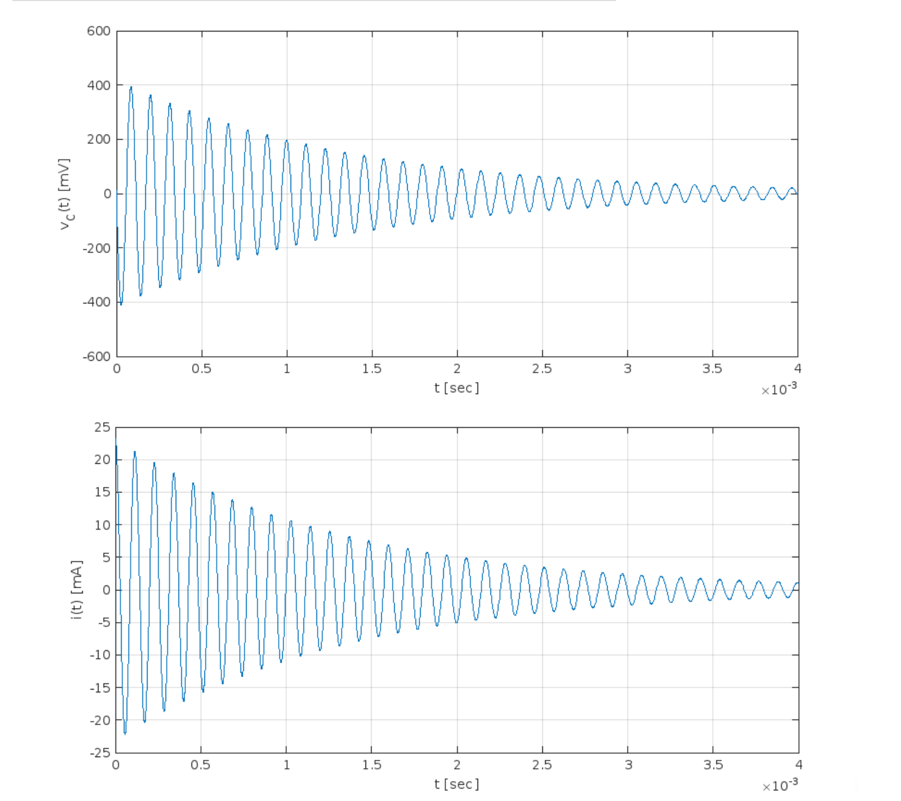
รูป: กราฟแสดงฟังก์ชัน และ ที่เป็นผลเฉลยของระบบสมการเชิงอนุพันธ์
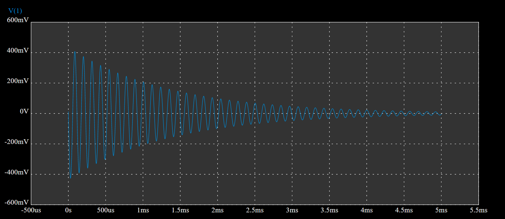
รูป: กราฟแสดงรูปคลื่นสัญญาณ V(1) สำหรับ เมื่อจำลองการทำงานด้วย EasyEDA
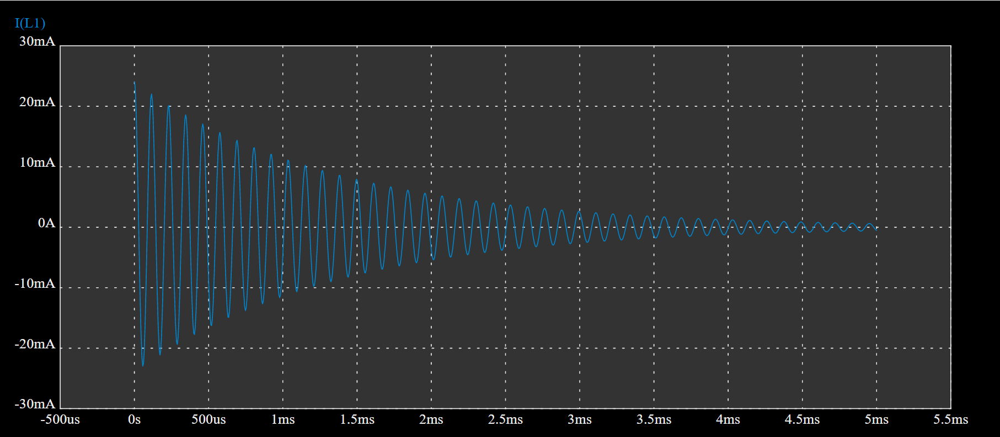
รูป: กราฟแสดงรูปคลื่นสัญญาณ i(L1) สำหรับ เมื่อจำลองการทำงานด้วย EasyEDA
สมการลักษณะเฉพาะ (Characteristic Equation) ที่เกี่ยวข้องกับสมการเชิงอนุพันธ์
ตามที่ได้นำเสนอไป มีลักษณะดังนี้
และนำไปหารากของสมการดังกล่าว ซึ่งเป็นสมการกำลังสอง (Quadratic Equation)
โดยที่ (มีหน่วยเป็น rad/sec) คือ ความถี่เรโซแนนซ์ (Resonance Frequency) และ คือ ตัวประกอบการหน่วง (Damping Factor)
ค่าของพารามิเตอร์สำหรับ R,L,C ที่เลือกมาใช้งาน เช่น R=0.5 Ω, C=1 uF, L=330 uH ทำให้เงื่อนไขต่อไปนี้เป็นจริง
ในกรณีนี้ รากของสมการลักษณะเฉพาะ จะได้เป็นเลขจำนวนเชิงซ้อน และได้ผลตอบสนองแบบ "หน่วงต่ำกว่าวิกฤต" (Under-damped) และมีรูปแบบของฟังก์ชันสำหรับกระแส โดยที่ และ เป็นค่าคงที่ใด ๆ (ซึ่งอยู่กับค่าของเงื่อนไขเริ่มต้น) และมีความถี่ เท่ากับ
หากทราบ ก็สามารถคำนวณหาแรงดันตกคร่อมที่ตัวเก็บประจุ ได้จากดังนี้
ในการวิเคราะห์วงจรไฟฟ้าสำหรับวงจรตัวอย่างนี้ เราสามารถทราบได้ว่า ค่าของพารามิเตอร์ในวงจร เช่น R1, C1, L1 มีผลอย่างไรบ้างต่อปริมาณทางไฟฟ้าในวงจร หรือคุณสมบัติของสัญญาณไฟฟ้า เช่น
- I(L1): กระแสที่ไหลผ่าน L1
- V(C1): แรงดันตกคร่อมที่ C1
- คาบหรือความถี่ของการแกว่งของสัญญาณไฟฟ้าที่เป็นผลตอบสนองของวงจร
จากสูตรสำหรับการคำนวณความถี่ ถ้าแทนค่า C=1 uF, L=330 uH, R=0.5 Ω จะได้ความถี่
▷ การจำลองการทำงานในโหมด DC Operating Point#
ถัดไปเป็นผลการวิเคราะห์วงจรและจำลองการทำงานด้วยซอฟต์แวร์ EasyEDA
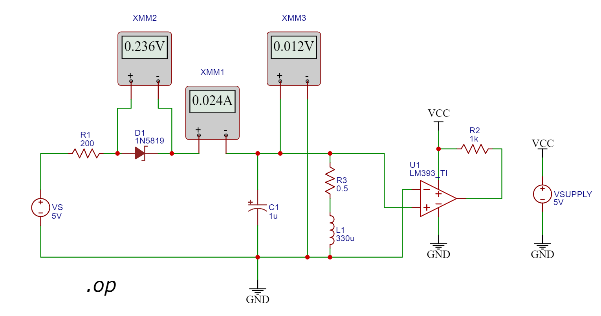
รูป: ผลการจำลองการทำงานในโหมด DC operating-point (.op) ด้วยซอฟต์แวร์ EasyEDA สำหรับช่วงที่ VS=5V และวัดแรงดันตกคร่อมที่ไดโอด D1 ได้เท่ากับ 0.236V กระแสไหลเท่ากับ 24mA และแรงดันตกคร่อมที่ตัวเก็บประจุเท่ากับ 12mV (= 24mA * 0.5Ω)
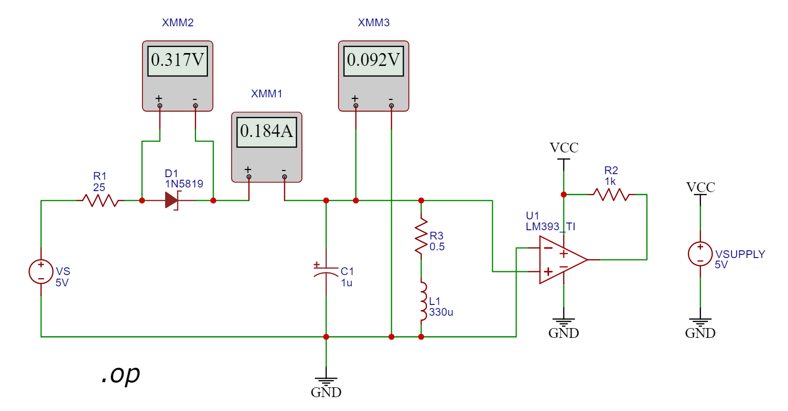
รูป: เมื่อเปลี่ยนค่าความต้านทาน R1 ลดลงจาก 200Ω เป็น 25Ω และวัดแรงดันตกคร่อมที่ไดโอด D1 จะได้เท่ากับ 0.317V กระแสไหลเท่ากับ 184mA และแรงดันตกคร่อมที่ตัวเก็บประจุเท่ากับ 92mV (= 184mA * 0.5Ω)
▷ การจำลองการทำงานในโหมด DC Transient#
จากรูปคลื่นสัญญาณจะเห็นได้ว่า เกิดการแกว่งของสัญญาณ V2 ซึ่งวัดได้จากแรงดันตกคร่อมที่ตัวเก็บประจุ C1 แบ่งได้เป็นสองช่วง ซึ่งเกิดจากการเปลี่ยนแปลงระดับของ VS และเกิดผลตอบสนองของวงจรชั่วขณะ (Transient Circuit Response) โดยที่ช่วงแรกนั้นเกิดจากกรณีที่ VS เปลี่ยนจาก 0V → 5V และช่วงที่สองเกิดจาก VS เปลี่ยนจาก 5V → 0V ตามลำดับ
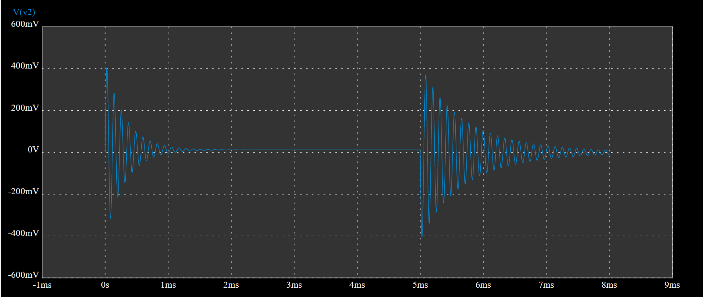
รูป: คลื่นสัญญาณที่วัดด้วย Voltage Probe: V2 ซึ่งเป็นแรงดันตกคร่อมที่ตัวเก็บประจุ เมื่อจำลองการทำงาน (แบ่งเป็นสองช่วงเวลาคือ ช่วงที่หนึ่ง t=0..5msec ช่วงที่สอง t ≥ 5msec)
คลื่นของสัญญาณมีลักษณะเป็นไปตามฟังก์ชัน Exponentially-damped Sinusoid แอมพลิจูดมีค่าลดลงแล้วลู่เข้าศูนย์
เมื่อจำลองการทำงาน จะได้คลื่นสัญญาณเอาต์พุตจากไอซี LM393 ดังนี้
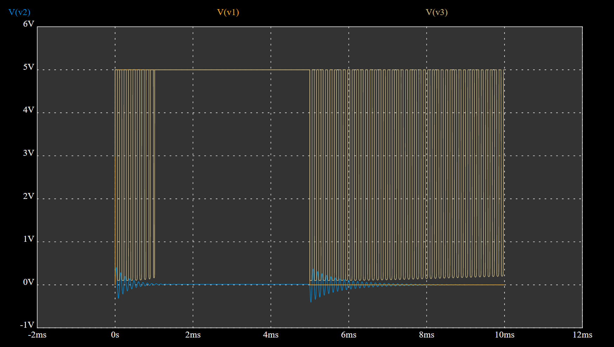
รูป: สัญญาณเอาต์พุต
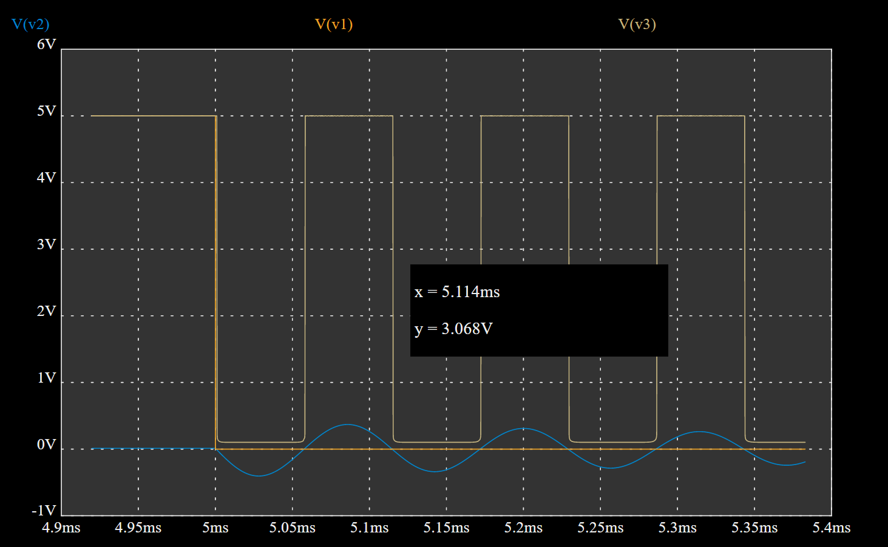
รูป: สัญญาณเอาต์พุต (ซูมขยายในแกนเวลา) และการวัดคาบและความถี่ของสัญญาณดิจิทัล
จากรูปคลื่นสัญญาณเมื่อใช้พารามิเตอร์ของวงจร C1=1 uF, R3=0.5 Ω, L1=330 uH จะวัดระยะเวลาหนึ่งคาบของสัญญาณเอาต์พุต ได้ประมาณ 114 usec หรือคำนวณเป็นความถี่ได้ประมาณ 8.772 kHz (ได้ค่าใกล้เคียงกับความถี่ เมื่อคำนวณตามสูตร)
▷ อุปกรณ์ที่ใช้ในการทดลอง#
เตรียมและตรวจสอบรายการของอุปกรณ์เพื่อนำมาใช้ในการต่อวงจรทดลองบนเบรดบอร์ด ดังนี้
- ตัวเหนี่ยวนำไฟฟ้า ทนกระแสสูงสุดได้อย่างน้อย 1A
- 330μH (Code: 331) จำนวน 1 ตัว
- 470μH (Code: 471) จำนวน 1 ตัว
- ตัวเก็บประจุไฟฟ้า 1uF จำนวน 1 ตัว
- ตัวต้านทาน 1kΩ จำนวน 1 ตัว
- ตัวต้านทาน 100Ω และ 200Ω อย่างละ 1 ตัว
- ไดโอด Schottky Rectifier เบอร์ 1N5819 (40V/1A) จำนวน 1 ตัว
- ปุ่มกด Push Button จำนวน 1 ตัว
- ไอซี LM393 (Dual Voltage Comparator) ตัวถัง PDIP-8 จำนวน 1 ตัว
- แผงต่อวงจร (Breadboard) จำนวน 1 อัน
- แหล่งจ่ายแรงดันไฟฟ้าคงที่ 5Vdc จำนวน 1 ชุด
- ลวดสายไฟ (Jumper Wires) สำหรับการต่อวงจร
- ออสซิลโลสโคปแบบดิจิทัล จำนวน 1 เครื่อง
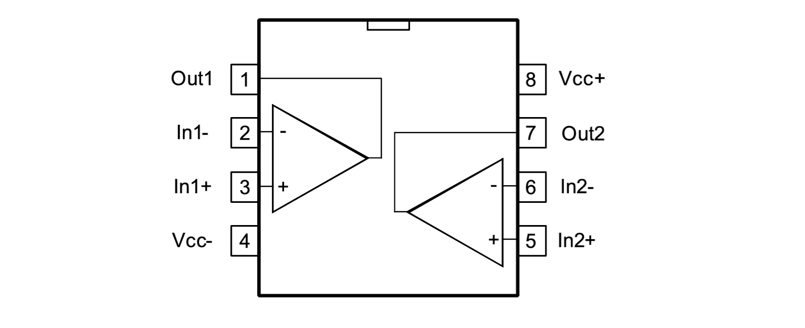
รูป: ตำแหน่งขาของไอซี LM393 (ตัวถัง PDIP-8) ที่มีตัวเปรียบเทียบแรงดันอยู่ 2 ชุด
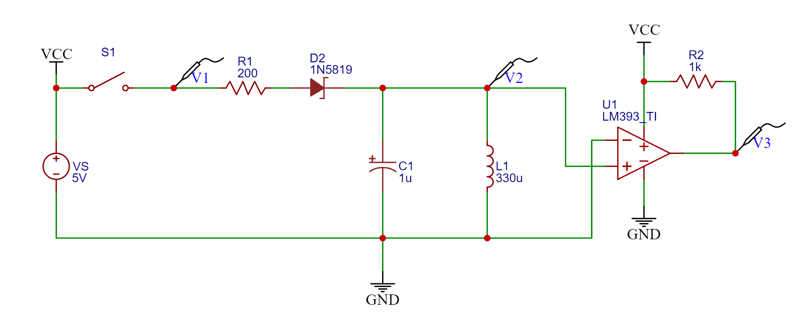
รูป: ผังวงจรสำหรับการต่อวงจรบนเบรดบอร์ด
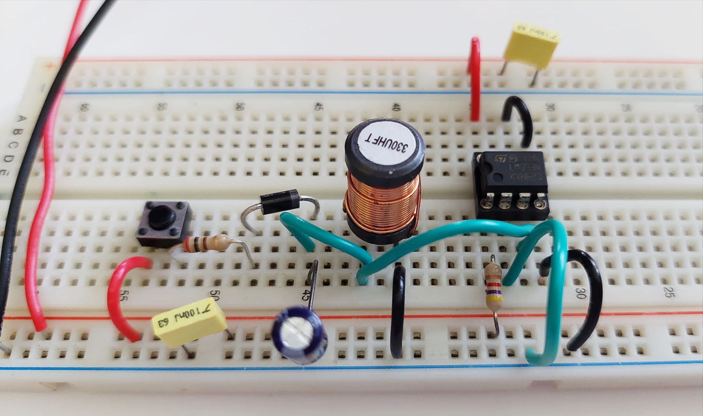
รูป: ตัวอย่างการต่อวงจรบนเบรดบอร์ด (L=330 uH, Tolerance ±10%)
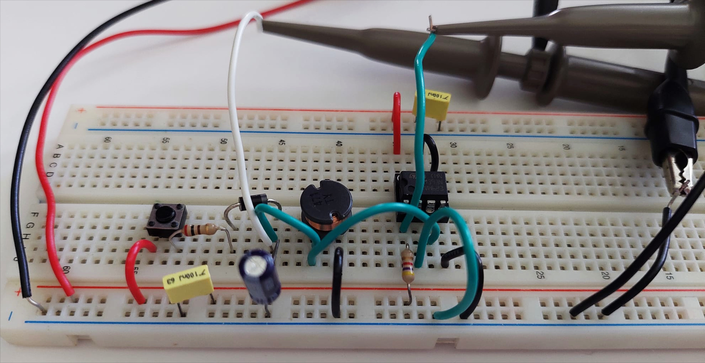
รูป: ตัวอย่างการต่อวงจรบนเบรดบอร์ด (L=470 uH, Tolerance ±10%)
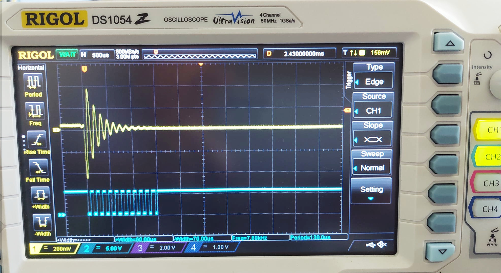
รูป: การวัดสัญญาณด้วยเครื่องออสซิลโลสโคป
ข้อสังเกต/คำแนะนำ: หากขาของขดลวดเหนี่ยวนำมีขนาดใหญ่เกินไป ไม่เหมาะสำหรับจะนำไปเสียบขาลงบนเบรดบอร์ด ให้ใช้วิธีอื่น เช่น การบัดกรีขากับลวดสายไฟที่มีขนาดเหมาะสม หรือใช้สายไฟที่มีคลิปหนีบแบบปากจระเข้ (Alligator Clips) เป็นต้น
▷ ผลการทดลองโดยใช้อุปกรณ์จริง#
ถัดไปเป็นผลจากการวัดสัญญาณด้วยออสซิลโลสโคป (Oscilloscope) เมื่อต่อวงจรทดลองบนเบรดบอร์ด แล้ววัดสัญญาณ 2 ช่อง โดยที่ช่องแรก (สัญญาณเส้นสีเหลือง) เป็นสัญญาณแบบแอนะล็อก ซึ่งเป็นแรงดันตกคร่อมที่ตัวเก็บประจุ V(C1) และช่องที่สอง (สัญญาณเส้นสีฟ้า) ) เป็นสัญญาณเอาต์พุตที่ได้จากไอซีวงจรเปรียบเทียบแรงดัน LM393 (มีตัวเปรียบเทียบสองชุด แต่ใช้เพียงชุดเดียว)
ถ้าแรงดันเอาต์พุต V(C1) มากกว่า 0V ไอซี LM393 จะให้เอาต์พุตลอจิก High (ได้ระดับแรงดันไฟฟ้าประมาณ 5V) และถ้าน้อยกว่า 0V จะได้ลอจิกเป็น Low

รูป: ตัวอย่างคลื่นสัญญาณที่วัดได้ ช่วงที่มีการกดปุ่ม (Button Pressed)

รูป: ตัวอย่างคลื่นสัญญาณที่วัดได้ ช่วงที่มีการปล่อยปุ่ม (Button Pressed)

รูป: คลื่นสัญญาณที่วัดได้เมื่อปล่อยปุ่ม (L=330 uH) ความถี่ 9.34 kHz

รูป: คลื่นสัญญาณที่วัดได้เมื่อปล่อยปุ่ม (L=470 uH) ความถี่ 7.63 kHz
จากรูปคลื่นสัญญาณจะเห็นได้ว่า ถ้าเปลี่ยนตัวเหนี่ยวนำ L1 ให้มีค่าเพิ่มขึ้น (เพิ่มจาก 330 uH เป็น 470 uH) จะทำให้สัญญาณเอาต์พุตจาก LM393 มีความถี่ลดลง (ลดลงจาก 9.34 kHz เป็น 7.63 kHz)
เอาต์พุตที่ได้จากไอซี LM393 เป็นคลื่นรูปทรงสี่เหลี่ยม (Rectangular Waveform) แต่จะไม่เกิดขึ้นต่อเนื่องไป และจะหายไป เมื่อแอมพลิจูดของสัญญาณ V(C1) ลดลงจนเป็นศูนย์ และเข้าสู่สภาวะคงตัวแล้ว

รูป: เอาต์พุตที่ได้จากไอซี LM393 รูปทรงสี่เหลี่ยม (Rectangular Waveform)
ถ้าพิจารณาตัวเลขสำหรับตัวเหนี่ยวนำ L=330 uH จะได้ความถี่ของสัญญาณเอาต์พุต ประมาณ 8.77 kHz จากการจำลองการทำงานด้วย EasyEDA และได้ 9.34 kHz จากการทดลองวัดสัญญาณด้วยอุปกรณ์จริง
▷ การคำนวณค่าเหนี่ยวนำจากความถี่ของสัญญาณเอาต์พุต#
ถ้าทดลองตามวงจรที่ได้ออกแบบไว้ แล้ววัดความถี่ของสัญญาณเอาต์พุต ก็สามารถนำมาคำนวณค่าของตัวเหนี่ยวนำได้ โดยใช้สูตรต่อไปนี้
ถ้าการเลือกใช้ค่าพารามิเตอร์ของวงจร ทำให้เงื่อนไขต่อไปนี้เป็นจริง ก็ใช้การประมาณค่าได้เพื่อคำนวณค่าเหนี่ยวนำ
ข้อสังเกต:
- ความต้านทาน R ควรจะมีค่าไม่เกิน 1Ω
- ถ้าลดค่าของตัวเก็บประจุ C จะทำให้ความถี่สูงขึ้น
- การเลือกใช้ค่าของตัวเก็บประจุ (คาปาซิเตอร์) สำหรับการทดลอง ควรเลือกอุปกรณ์ที่มีค่าความคลาดเคลื่อนน้อย (Tight Capacitance Tolerance) เช่น ±10% หรือ ±5%
จากผลการทดลอง ความถี่ของสัญญาณเอาต์พุตที่วัดได้คือ 9.34 kHz และ 7.63 kHz สำหรับ L=330uH และ L=470uH ตามลำดับ ดังนั้นคำนวณค่าเหนี่ยวนำได้ประมาณ 290.4 uH และ 435.1 uH ตามลำดับ และมีเปอร์เซ็นต์ความผิดพลาดจากค่าอ้างอิง (Relative Error)
▷ กล่าวสรุป#
บทความนี้นำเสนอวงจรพื้นฐานที่สามารถนำมาประยุกต์ใช้ในการวัดค่าค่าการเหนี่ยวนำไฟฟ้าได้ โดยใช้อุปกรณ์พื้นฐานทางไฟฟ้าและอิเล็กทรอนิกส์สำหรับการต่อวงจรทดลอง และใช้ออสซิลโลสโคปเป็นเครื่องวัดความถี่ของสัญญาณเอาต์พุตจากวงจร แล้วนำไปคำนวณหาค่าของตัวเหนี่ยวนำ วิธีการตามที่ได้นำเสนอไปนั้นก็เหมาะสำหรับนำไปประยุกต์ใช้ร่วมกับไมโครคอนโทรลเลอร์เพื่อวัดความถี่ของสัญญาณดิจิทัล แทนการใช้เครื่องออสซิลโลสโคป
This work is licensed under a Creative Commons Attribution-ShareAlike 4.0 International License.
Created: 2022-05-29 | Last Updated: 2022-06-01